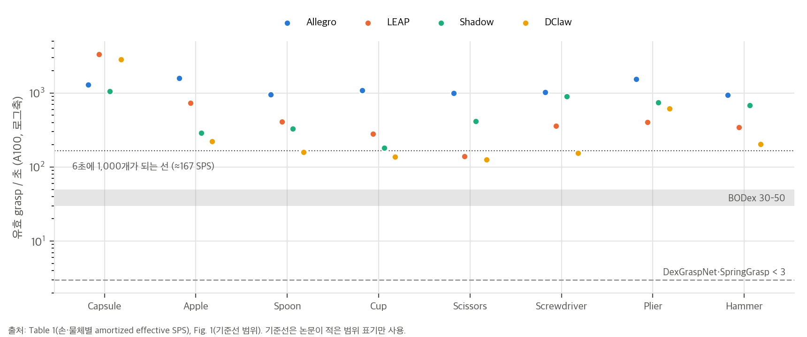
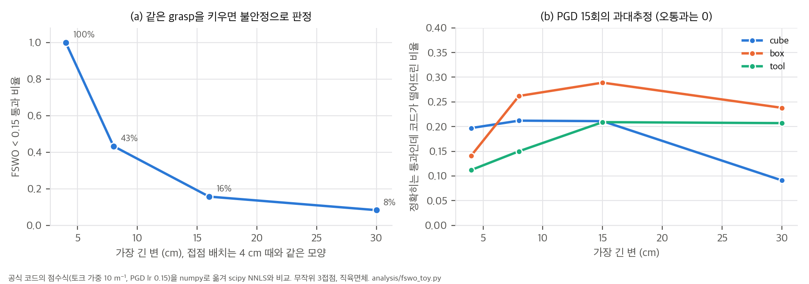
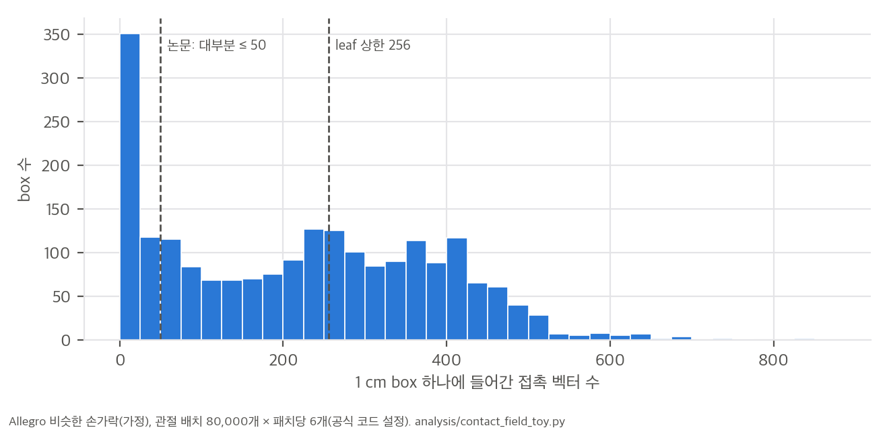

af43818, 2026-06-12)04 D12).한 줄 요약: 손이 만들 수 있는 모든 접촉(위치 + 법선)을 손마다 한 번 표본으로 뽑아 BVH로 저장해 둡니다(contact field). 그러면 물체 표면과 교차 검사만으로 손가락별 접촉 가능 영역이 나옵니다. 그 안에서 안정한 접점을 무작위 국소 탐색으로 고르고, IK로 손가락을 그 접점에 맞춥니다. 이렇게 해서 dexterous grasp를 A100 한 장으로 초당 수백~수천 개 만듭니다.
논문이 내세우는 주장은 다음과 같습니다(Abstract, Sec. 1).
[손마다 한 번] 손 메쉬를 작은 접촉 패치로 나눔 → 관절 배치를 무작위로 뽑아 패치의 (위치, 법선)을 모음
→ 1 cm box로 덮고 LBVH로 정리 = contact field (Sec. 4, Alg. 1)
[물체마다] 물체 점군 2,048개 → 오목한 점 제거(Sec. 5.1)
1. 물체 배치: 손바닥 위 canonical box 또는 contact field의 한 점에 물체 표면점을 맞춤 (Sec. 5.2)
2. 접촉 영역: 물체 (p, −n)을 contact field BVH에 질의 → 손가락(의존 그룹)별 접촉 가능 영역 D_i (Sec. 5.3)
3. 접점 최적화: 각 D_i에서 점 하나씩, 블록별 0차 무작위 국소 탐색으로 안정성 점수 J 최소화 (Sec. 5.4, Alg. 2)
4. 운동학: 역조회로 손 쪽 접점을 찾고, 두 점 맞춤 DLS IK → 투영으로 미세 조정 (Sec. 5.5, Eq. 7–8)
5. 후처리: 안 쓴 손가락 관절을 무작위로 채우고 충돌 검사로 거름 (Sec. 5.6)
grasp는 (손 좌표계의 물체 자세 P, 관절 q)입니다. 유효 조건은 두 가지입니다.
FSWO: min_α ‖Σ αᵢ nᵢ‖² + λ ‖Σ αᵢ (pᵢ × nᵢ)‖² s.t. ∃ j: αⱼ = 1, αᵢ ≥ 0 (Eq. 1)
마찰이 있는 GSWO(Eq. 2)는 접선 성분 β를 마찰 원뿔 안에서 더한 형태입니다. 저자는 둘 다 j를 고정하면 볼록 문제 n개로 나뉘고, 투영 경사하강으로 풀 수 있다고 씁니다. 공개 코드는 FSWO만 구현합니다(04 D2).
04 C5). 단, "대부분의 box는 50개 이하"라는 전제는 코드 설정에서 성립하지 않을 수 있습니다(03 §2).| 단계 | 논문 서술 | 공개 코드의 실제 값 |
|---|---|---|
| 물체 전처리 | 작은 box를 놓았을 때 크게 침투하는 오목점 제거 (Sec. 5.1) | 점군 2,048개. 점마다 반지름 1 cm, 높이 2 mm 원기둥 안에 다른 점이 5개 넘게 있으면 제거 |
| 물체 배치 | exhaustive(contact field의 한 점에 맞춤) 또는 canonical(손바닥 위 box) (Sec. 5.2) | 기본값 canonical. 배치의 50%는 손바닥(static link)에 붙여 시작 |
| 접촉 영역 | 의존 그룹(정적 링크를 뺀 운동학 트리의 연결 성분)별로 합치고 k개를 무작위 선택 (Sec. 5.3) | k = 3. 영역마다 물체 점 500개를 다시 뽑고, 점이 5개 이하인 영역은 버림 |
| 접점 최적화 | 블록별 0차 무작위 국소 탐색, 이전 힘 해를 warm start로 재사용("free lunch") (Sec. 5.4, Alg. 2) | 바깥 5회 × 접점 3개 × 변이 6개. 변이 폭 σ = 5 × 점 간격. 점수 = FSWO 잔차 노름, 통과 기준 < 0.15 |
| 운동학 | 역조회로 손 접점을 찾고, p̃→p와 p̃+βñ→p+βn 두 점을 맞추는 DLS (Eq. 7–8). 2단계 투영 미세 조정 | β = 1 cm, λ = 1e-4. 무작위 재시작 10회와 사슬별 최선 해 조합(논문에 없음). 미세 조정 15스텝, 최종 허용 4 mm |
| 후처리 | 안 쓴 관절을 무작위로 채우고, 손-손·손-물체 충돌이나 안정성 기준에 걸리면 버림 (Sec. 5.6) | 무작위 채우기 최대 5회. 충돌만 검사하고 안정성은 다시 보지 않음(04 D4) |
Discussion (Sec. 5.7): 저자는 이 알고리즘을 탐색 트리로 봅니다(물체 자세 → 손가락 → 접점 → 관절). 그 위에서 완전성 논증, 이전 결과 재사용(multi-pass), 데이터 기반 물체 자세 정책, 사람이 지정하는 기능적 grasp 같은 확장을 제안합니다. 완전성은 "충분히 가까운 초기값이면"이라는 조건이 붙은 정성 논증입니다.
| 손 | Capsule | Apple | Spoon | Cup | Scissors | Screwdriver | Plier | Hammer | trimmed µ (논문) | 우리 재계산 |
|---|---|---|---|---|---|---|---|---|---|---|
| Allegro | 1296.1 | 1578.8 | 955.6 | 1090.0 | 989.2 | 1020.6 | 1545.0 | 944.2 | 1090.8 | 1149.4 |
| LEAP | 3306.0 | 729.0 | 408.3 | 281.6 | 138.6 | 356.6 | 403.0 | 343.0 | 420.2 | 420.3 |
| Shadow | 1060.2 | 288.4 | 329.4 | 181.5 | 416.2 | 895.0 | 745.1 | 678.6 | 558.8 | 558.8 |
| DClaw | 2823.5 | 221.3 | 158.9 | 138.1 | 126.1 | 154.5 | 619.3 | 203.2 | 249.1 | 249.2 |
해석 (재계산은 04_code_verification.md §3과 analysis/table_check.py):

| 방법 | Diverse Contact | 유효 SPS | forward 시간 (초) |
|---|---|---|---|
| DexGraspNet [19] | ✓ | < 3 | 1800–2000 |
| SpringGrasp [6] | ✗ (손끝) | < 3 | 10–40 |
| BODex [5] | ✗ (손끝) | 30–50 | 100–120 |
| Lightning Grasp | ✓ | 300–1000 | 2–5 |
Allegro + YCB Apple 기준입니다. GPU 네 종 모두 단계별 비율의 합이 99.7–100.0%로 반올림 안에서 맞습니다. "접촉 최적화와 운동학 최적화가 각각 약 33%"는 접촉 최적화 27–43%, 운동학 I+II 34–38%로 대체로 맞습니다. A100 SPS 1578.0은 Table 1의 Allegro–Apple 1578.8과 거의 같습니다. RTX 4090은 TITAN X의 3.5배입니다.
컵처럼 오목한 물체에서 SPS가 크게 떨어집니다. 운동학 최적화는 접점 주변의 국소 충돌은 풀지만, 손가락 다른 부분이 물체를 관통하는 전역 침투는 못 풉니다. 저자는 contact field box에 손가락 모양 정보를 넣어 질의 단계부터 충돌을 고려하자는 방향을 제안합니다.
오목한 물체의 전역 침투, 손가락 하나에 접점 여러 개를 두는 일반형이 공개판에 없다는 점(Sec. 5.6), 데이터 기반 탐색 미구현(Sec. 5.7)을 듭니다. 저장소 README는 여기에 세 가지를 더합니다. 아주 큰 물체는 아직 쓰지 말 것, mimic joint가 있는 손은 10–200 SPS로 느리다는 것, torch 2.11에서 GPU 메모리가 해제되지 않는다는 것입니다.
03 §1). 코드의 토크 가중은 10 m⁻¹(λ = 100 m⁻²)로 고정입니다. 같은 모양의 접점 배치를 4 cm에서 30 cm로 키우면 통과 비율이 100%에서 8%로 떨어집니다(toy). README의 "큰 물체는 아직"과 이슈 #15의 크기 한계와도 이어지는 성질입니다.04 D3). 손가락 접점은 물체 좌표계 값이고, 손바닥 접점은 손 좌표계 값인데, 둘을 그대로 이어 붙입니다. 최종 통과 판정은 손바닥 접점을 빼고 다시 계산하므로 잘못된 grasp가 통과하지는 않습니다. 다만 배치의 절반이 엉뚱한 목적함수로 최적화됩니다. 코드 읽기로 확인했고, 실행으로 검증하지는 않았습니다.04 D4). IK가 허용 오차 4 mm 안으로 맞추고 빈 손가락을 무작위로 채운 뒤에는 충돌만 봅니다.04 D9). 공개 설정에서 Allegro, LEAP, DClaw는 손끝 링크와 손바닥만 접촉에 씁니다. Shadow는 중간 마디도 넣었지만 법선 대부분을 막아 둡니다(이슈 #12, 답변 없음). 손 전체 표면을 쓰는 DexGraspNet과는 다른 의미의 다양성입니다.04 D8)..so로만 배포됩니다(04 D1). 논문의 핵심인 Alg. 1과 질의 단계를 코드로 확인할 수 없습니다.04 D10).재계산 스크립트는 세 개이고, 모두 numpy·scipy 단일 스레드로 CPU에서 30초 안에 끝납니다.
analysis/table_check.py: Table 1, Fig. 1, Fig. 10, 본문 수치 → table_check_results.jsonanalysis/fswo_toy.py: 공식 코드의 안정성 점수식을 numpy로 옮겨 scipy의 정확한 NNLS와 비교 → fswo_toy_results.jsonanalysis/contact_field_toy.py: 코드 설정의 contact field 표본 밀도 → contact_field_toy_results.jsonlygra/batch_grasp_optimizer.py의 compute_wrench_score_vectorized는 접점 k개 중 하나(pivot j)의 힘을 1로 고정합니다. 그리고 나머지 접점의 힘 αᵢ ≥ 0으로 그 힘과 토크를 상쇄하는 NNLS를 풉니다.
A_j = [ nᵢ ; α_w · (pᵢ − pⱼ) × nᵢ ] (i ≠ j, 6 × (k−1)), b_j = [ −nⱼ ; 0 ]
score = min_j ‖A_j x* − b_j‖, x* = argmin_{x ≥ 0} ‖A_j x − b_j‖², α_w = 10 (단위 m⁻¹)
논문 Eq. 1과 비교하면 차이가 세 가지 있습니다.
위치를 s배 키우면 힘 행은 그대로이고 토크 행만 s배가 됩니다. 토크가 완전히 상쇄되지 않는 배치라면 점수가 s에 비례해 커집니다. 그래서 같은 모양의 grasp도 물체가 크면 불안정으로 판정됩니다. 4 cm 직육면체에서 통과한 무작위 3접점 배치 300개를 그대로 키워 다시 채점했습니다.
| 가장 긴 변 | 4 cm | 8 cm | 16 cm | 30 cm |
|---|---|---|---|---|
| FSWO < 0.15 통과 비율 | 100% | 43% | 16% | 8% |
| 점수 중앙값 | 0.085 | 0.168 | 0.316 | 0.506 |
물리적으로 같은 grasp라면 크기와 무관하게 판정이 같아야 합니다. 토크 행을 물체 크기(예: 외접 반지름 R)로 나누는 α_w = 1/R 형태라면 이 의존성이 사라집니다. README가 "아주 큰 물체는 아직 쓰지 말라"고 하고, 이슈 #15가 점 간격으로 크기 한계를 설명합니다. 이 toy는 그와 별개로 점수식 자체도 크기에 불리하다는 것을 보여 줍니다.

코드는 NNLS를 고정 학습률 0.15의 투영 경사하강(PGD)으로 15회(warm start면 4회) 돌립니다. 직육면체 세 형상(정육면체, 1:0.6:0.4 상자, 1:0.15:0.15 막대)과 크기 네 가지에서 무작위 3접점 1,500개씩을 비교했습니다.
안정한 배치(정확한 점수 < 0.05)에서 접점 하나를 σ = 15.7 mm(사과 크기 물체의 코드 기본 변이 폭)만큼 움직였습니다. 그 뒤 직전 힘 해에서 4회만 돌린 결과를 비교했습니다.
| warm start 4회 | cold start 15회 | |
|---|---|---|
| 과대추정 중앙값 (8 cm 상자) | 0.015 | 0.031 |
| 과대추정 중앙값 (15 cm 상자) | 0.017 | 0.031 |
warm start 4회가 cold start 15회보다 정확합니다. 논문의 "free lunch" 주장은 toy에서 그대로 재현됩니다.
04 D3)코드는 손바닥(static link)에 물체를 붙여 시작한 배치에서, 손가락 접점(물체 좌표계)과 손바닥 접점(손 좌표계)을 그대로 이어 붙여 점수를 냅니다. 무작위 물체 자세 600개로 올바른 점수와 혼용 점수를 비교했습니다.
최종 판정은 손바닥을 빼고 다시 계산하므로 잘못된 grasp가 통과하지는 않습니다. 그 대신 손바닥 배치(전체의 50%)의 접점 최적화가 엉뚱한 방향으로 갑니다. 그리고 손바닥에 기대는 power grasp는 손끝만으로도 균형이 맞아야 통과합니다.
공식 코드는 패치마다 keyvector 6개, 관절 배치 80,000개를 씁니다. 그래서 패치 하나에 접촉 벡터가 48만 개 생기고, 이를 1 cm box로 덮고 leaf당 최대 256개로 자릅니다. Allegro와 비슷한 치수의 손가락(가정)으로 손끝 패치 세 개를 계산했습니다.
| 손끝 패치 | 차지한 box(≈ cm³) | box당 중앙값 | 50개 초과 box | 256개 초과 box | 256 상한으로 버려지는 벡터 |
|---|---|---|---|---|---|
| 손바닥 쪽 | 2,139 | 230 | 78% | 44% | 25% |
| 옆면 | 1,969 | 265 | 81% | 53% | 25% |
| 끝 | 2,208 | 231 | 82% | 42% | 17% |

04 D6). 이 시간은 "forward 2–5초"에 들어가지 않습니다.zhaohengyin/lightning-grasp @ af43818 (2026-06-12, Python 패키지 lygra, 파일 42개). Release v1.0.0(2025-11-11)의 커널 바이너리와 자산 zip은 메타데이터만 봤고 받지 않았습니다. 저장소 이슈 16건을 읽었습니다.lygra/cpp/build/{geometry,lbvh}.so)은 소스가 공개되지 않아 동작을 확인할 수 없습니다.| 논문 | 구현 위치 | 일치 여부 |
|---|---|---|
| Contact field 표본 (Sec. 4.3) | contact_field.py: generate_contact_field (n_iter=80000) |
✅ 관절 한계 안 균일 표본 |
| 손 표면 패치 분해 (Sec. 4.4) | mesh_analyzer.py: generate_mesh_group (링크당 표면점 3,000개, 1 cm·36° 안에서 탐욕적으로 묶음, 패치당 keyvector 6개) |
✅ "확률적 표면 덮기" 그대로 |
| Contact field BVH (Alg. 1) | contact/accel/lbvh_s2bundle.py (box_w=0.01, max_leaf_size=256) → bvh_s2bundle.py → lbvh.so |
⚠️ box 생성과 Morton 정렬은 Python에 있고, 구성과 질의는 비공개 커널(D1) |
| 물체 접촉 질의, 법선 정렬 θ_hit | compute_interaction(angle_threshold=0.2) |
⚠️ 0.2가 각도(rad)인지 내적 문턱인지 커널이라 확인 불가 |
| 물체 전처리 (Sec. 5.1) | mesh_analyzer.get_support_point_mask(r=0.01, z=0.002, n>5) |
✅ |
| 물체 배치 (Sec. 5.2) | pipeline/module/object_placement.py (canonical box, 손바닥 배치 50%) |
✅ 손바닥 배치 확률은 논문에 없음 |
| 의존 그룹과 접촉 영역 (Sec. 5.3) | kinematics.get_dependency_sets, contact_collection.py (영역 해상도 500, 최소 5점) |
✅ |
| 블록별 0차 최적화 (Alg. 2) | batch_grasp_optimizer.py: optimize/optimize_step (바깥 5 × 변이 6, σ = 5·√(면적/2048)) |
✅ 변이는 배치 방향으로만 병렬이고 변이끼리는 순차 |
| 안정성 점수 J = FSWO (Eq. 1) | compute_wrench_score_vectorized (wrench_alpha=10), batched_nnls (PGD, lr 0.15, 15회 / warm 4회) |
⚠️ D2 |
| "Free lunch" warm start (Sec. 5.4) | optimize_step의 init_sol=nnls_sol |
✅ 03 §1.4 toy로 효과 재현 |
| 두 점 맞춤 DLS IK (Eq. 7–8) | kinematics.batch_contact_ik (normal_beta=0.01, regularization 1e-4) |
✅ Eq. 8의 Jacobian 변환도 같음. 재시작·조합은 D5 |
| 2단계 투영 미세 조정 (Sec. 5.5) | pipeline/module/kinematics.batch_contact_adjustment (5 × 3스텝, 3스텝마다 투영, 최종 4 mm) |
✅ |
| 후처리 (Sec. 5.6) | postprocess.py (빈 관절 무작위 최대 5회), collision.py (AABB + GJK, 점-링크 메쉬) |
⚠️ 안정성 재검사 없음(D4) |
| # | 내용 | 영향 |
|---|---|---|
| D1 | 핵심 커널이 비공개 바이너리입니다. README는 "CUDA C++ 소스는 다음 릴리스에 공개"라고 씁니다. Release에는 Python 3.8–3.10 × CUDA 12.1–12.6용 .so(Ubuntu)만 있습니다. lygra/__init__.py는 커널을 못 읽으면 gem, lbvh를 None으로 두고, CPU·MPS로 대신 실행할 경로는 없습니다. .cuda() 호출도 32곳입니다. |
논문의 핵심인 BVH 구성·질의(Alg. 1), 점 투영, GJK, 점-메쉬 충돌을 검증할 수 없습니다. NVIDIA GPU와 Linux가 아니면 실행할 수 없습니다. |
| D2 | 안정성 점수는 마찰 없는 FSWO만 있습니다. 토크 가중 α_w = 10 m⁻¹(λ = 100 m⁻²), 점수 = 잔차 노름, 통과 < 0.15(contact_optimization.py:22)입니다. 토크 기준점은 pivot 접점입니다. NNLS는 고정 학습률 0.15 PGD로 15회 돕니다. 마찰(GSWO, Eq. 2)과 중력은 없습니다(이슈 #14에서 저자는 "b에 중력을 더하면 된다"고 답함). |
점수가 물체 크기에 따라 달라집니다. 같은 배치라도 30 cm에서는 8%만 통과합니다(03 §1.2). PGD는 정확히는 통과인 배치의 9–29%를 떨어뜨립니다(03 §1.3). 마찰 원뿔 기준보다 보수적이면서, 중력은 무시하므로 정반대 방향의 오차도 있습니다. |
| D3 | 손바닥 접점과 손가락 접점의 좌표계가 섞입니다. 접촉 영역 점은 물체 좌표계(contact_collection.py:91이 변환 전 object_points에서 모음)입니다. 손바닥 접점은 손 좌표계(object_placement.py:120, robot_contact)입니다. batch_grasp_optimizer.py:304, 338에서 둘을 그대로 이어 붙여 점수를 냅니다. 최종 점수(:405)는 손바닥 접점을 빼고 다시 계산합니다. |
손바닥 배치(전체의 50%)의 최적화 목적함수가 올바른 값과 순위 상관 0.25입니다(03 §1.5 toy). 잘못된 grasp가 통과하지는 않지만, 손바닥에 기대는 power grasp는 손끝만으로 균형이 맞아야 통과합니다. 코드 읽기로 확인했고 실행 검증은 하지 않았습니다. |
| D4 | 실현된 접점은 다시 채점하지 않습니다. 안정성은 계획한 접점에서만 봅니다. IK가 4 mm 허용 안에서 맞추고 빈 손가락을 무작위로 채운 뒤에는 충돌만 검사합니다(postprocess.py). 논문 Sec. 5.6은 "충돌이나 안정성 기준에 걸리면 버린다"고 씁니다. |
실제 손 자세의 접점과 법선이 계획과 다를 수 있습니다. 시뮬레이터에서의 불안정(이슈 #6)과 이어질 수 있습니다. |
| D5 | IK에 무작위 재시작과 사슬별 조합이 있습니다. 1단계 IK는 무작위 초기값 10개로 12회 반복합니다(step 0.4). 그다음 접점마다 오차가 가장 작은 재시작을 골라, 그 사슬의 관절만 가져와 합칩니다(kinematics.py: batch_contact_ik). 1단계 통과 기준은 오차 제곱합/2 < 0.02²입니다. |
논문에 없는 장치이고, 독립 사슬이라는 가정에 기댑니다. 의존 그룹이 정적 링크로 잘 나뉘어야 맞습니다. |
| D6 | Contact field를 실행 때마다 다시 만들고, 캐시는 고장 났습니다. ContactField.save/load(contact_field.py:310, 344)는 os를 import하지 않았고 path, data가 정의되지 않아 호출하면 실패합니다. 표본 생성은 관절 배치 8만 회를 도는 Python 루프입니다. |
Fig. 5의 "단계별 결과를 캐시해 재사용"은 공개판에서 쓸 수 없습니다. 이 준비 시간은 "forward 2–5초"에 들어가지 않습니다. |
| D7 | 접촉 영역과 투영은 이산 점입니다. 물체 점군은 2,048개이고, 영역마다 500개를 다시 뽑습니다. Alg. 2의 Project(p, D)는 그 점들 중 가장 가까운 점(torch.cdist)입니다. |
큰 물체에서는 점 간격이 1 cm를 넘어 해상도가 떨어집니다(이슈 #15). |
| D8 | "조율이 필요 없다"와 달리 손별 설정과 상수가 많습니다. 손마다 canonical box, 링크별 허용·금지 법선, 충돌 예외 목록이 있습니다(lygra/robot/*.py). 상수로는 통과 0.15, α_w 10, σ 배수 5, IK λ와 step, 허용 오차 4 mm, β 1 cm, 질의 문턱 0.2, 패치 허용 1 cm·36°, 손바닥 배치 50%가 있습니다. |
에너지 균형 가중치는 없다는 주장은 맞습니다. 하지만 새 손을 붙일 때 설정이 필요합니다. 이슈 #5, #8, #10이 모두 새 손 모델 설정 문제입니다. |
| D9 | 접촉에 쓰는 링크가 좁습니다. Allegro, DClaw는 손끝 링크와 손바닥만 씁니다. DClaw 손바닥은 허용 각도가 0이라 사실상 꺼져 있습니다(has_aligned가 cos 0 = 1을 넘을 수 없음). Shadow는 원위·중위 마디를 넣었지만 중위 마디 법선은 ±z와 +y를 막아 대부분 빠집니다(이슈 #12). LEAP 설정은 movable link 목록에 base_link가 있는데, LEAP URDF의 링크 이름과 맞는지는 자산을 받지 않아 확인하지 못했습니다. |
Fig. 1의 "Diverse Contact ✓"는 손 전체 표면이 아니라 손끝 링크 표면 위의 다양한 점·법선을 뜻합니다. |
| D10 | 벤치마크·시간 측정 코드가 없습니다. demo.py는 forward를 한 번 돌리고 해의 개수만 출력합니다. |
Table 1과 Fig. 10을 저장소로 재현할 방법이 없습니다. |
| D11 | 작은 버그와 쓰지 않는 코드가 있습니다. contact_collection.py:79는 sys.exit를 쓰는데 sys를 import하지 않습니다(탐색 실패 경로에서 NameError). compute_wrench_score는 batched_nnls가 받지 않는 x_placeholder 인자를 넘기는데(:112), 호출되지 않는 함수입니다. concentration_score도 쓰이지 않습니다. |
기본 경로에는 영향이 없습니다. 실패 처리가 깨져 있습니다. |
| D12 | 라이선스 표기가 둘입니다. LICENSE와 README는 CC BY-NC 4.0이고 "소프트웨어와 생성 데이터"를 연구용으로 한정합니다. 소스 파일 머리말은 "All rights reserved"입니다. | 상업적 사용(생성한 grasp 데이터 포함)에는 별도 라이선스가 필요하다고 README가 명시합니다. |
| D13 | mimic joint 지원(2026-04)은 실험 기능입니다. README가 A100·RTX 4090에서 10–200 SPS라고 적습니다. torch 2.11에서는 GPU 메모리가 해제되지 않아 2.7로 낮추라고 안내합니다. | 커플링 관절이 있는 손(예: 사람형 손 다수)에서는 Table 1 속도를 기대하기 어렵습니다. |
analysis/table_check.py, fswo_toy.py, contact_field_toy.py)| # | 주장 (출처) | 재계산 | 판정 |
|---|---|---|---|
| C1 | Table 1 trimmed µ = 최솟값·최댓값 제외 평균 | LEAP 420.25, Shadow 558.78, DClaw 249.22는 맞음. Allegro는 1149.42인데 1090.8 (Capsule + Apple을 뺀 값) | Allegro 행 ✗ |
| C2 | forward 한 번에 1,000–10,000개, 2–5초 (Sec. 1). 모든 설정 6초 안 (Table 1) | SPS × 6 < 1,000인 칸이 5개 (LEAP–Scissors 832, DClaw–Spoon 953·Cup 829·Scissors 757·Screwdriver 927) | ⚠️ 모든 경우는 아님 (SPS가 amortized라면 직접 비교 불가) |
| C3 | 기존 방법보다 수 자릿수 빠름 (Abstract, Fig. 1) | BODex 대비 SPS 6–33×, 시간 20–60×. DexGraspNet 대비 SPS > 100×, 시간 360–1000×. SpringGrasp 대비 SPS > 100×, 시간 2–20× | BODex 대비로는 한 자릿수 |
| C4 | TITAN X가 A100 위 기존 방법보다 20–100× (Sec. 6.3), "수백 배" (Fig. 10) | 626.1 SPS → BODex 대비 12.5–20.9×, DexGraspNet·SpringGrasp 대비 > 208× | 기준선에 따라 맞거나 틀림 |
| C5 | Fig. 10 단계 비율, 접촉·운동학 각 약 33% | 합 99.7–100.0%. 접촉 27.2–43.4%, 운동학 I+II 33.6–38.0%. A100 1578.0 ≈ Table 1의 1578.8 | ✅ |
| C6 | 메모리: box 3,000 × 256 × 16 B ≈ 12 MB, 100개 1.2 GB, 법선 2바이트 압축 8× (Sec. 4.4) | 12.29 MB + 0.29 MB, 1.26 GB, 8× | ✅ 산술 |
| C7 | 256방향이면 원뿔 반각 약 7° (Sec. 4.3) | arccos(1 − 2/256) = 7.17° | ✅ |
| V1 | "대부분 box는 50개 이하" (Sec. 4.4) | 코드 설정(80,000 × 6) toy: 78–82%가 50 초과, 42–53%가 256 초과 | ✗ 코드 설정에서는 성립 안 함 (03 §2) |
| V2 | warm start로 내부 반복을 크게 줄인다 (Sec. 5.4) | warm 4회 과대추정 0.015–0.017 < cold 15회 0.031 | ✅ |
| V3 | FSWO가 안정성 기준 (Eq. 1) | 같은 배치를 4 → 30 cm로 키우면 통과 100% → 8%. PGD 15회는 정답 통과의 9–29%를 떨어뜨리고, 오통과는 0 | ⚠️ 크기 의존, 보수적 |
| 항목 | 요구 사항 | 비고 |
|---|---|---|
| OS | Ubuntu 22.04 / 24.04 (README) | 커널 바이너리가 Linux용 .so |
| GPU | NVIDIA Pascal–Ada Lovelace, CUDA 12 | RTX 50 시리즈는 이슈 #7에서 별도 대응. TITAN X에서도 626 SPS(Fig. 10) |
| Python, torch | 3.8–3.10. torch 2.4.1(py38) 또는 2.8.0(py39) conda 환경. 2.11은 메모리 누수 | 그 밖의 버전은 이슈로 요청 |
| 자산 | Release의 assets.zip(손·물체 44 MB)과 커널 zip(약 64 MB) |
저장소 자체는 6 MB |
| 시간 | 물체 하나에 몇 초. 준비 단계(contact field 구성)는 실행마다 다시 돎 | D6 |
| 라이선스 | CC BY-NC 4.0, 생성 데이터 포함 연구용 | 상업적 사용은 별도 라이선스 |
판단: NVIDIA GPU가 있는 Linux 머신이면 그대로 돌릴 수 있습니다. 요구 사양이 낮은 편이라(구형 GPU도 됨) 재현 장벽이 낮습니다. 다만 Table 1 숫자를 재려면 시간 측정 코드를 직접 붙여야 합니다(D10). 결과를 쓸 때는 시뮬레이터 검증을 따로 해야 합니다(D2, D4, 이슈 #6).
| 단계 | 가능 여부 | 근거 |
|---|---|---|
| 점수식·contact field 밀도·표 수치 toy | ✅ 완료 | numpy·scipy, 30초 안 |
| 공식 코드 실행 | ❌ | CUDA 전용 바이너리, .cuda() 32곳, CPU·MPS 대체 경로 없음 |
| 순수 Python 부분(FK·IK·NNLS 점수)을 CPU torch나 MPS로 이식 | 조건부 | torch 설치가 필요합니다(설치 전 승인). 커널이 하던 BVH 질의, 투영, 충돌은 다시 구현해야 합니다 |
| 공식 grasp 결과로 MuJoCo 흔들기 검증 | 조건부 | MuJoCo는 CPU로 돌지만, grasp를 만들려면 GPU 머신이 먼저 필요합니다 |
| 구성 요소 | 난이도 | 메모 |
|---|---|---|
| contact field 표본(FK로 손 표면 벡터 모으기) | 낮음 | 몇십 줄입니다. 표본 수는 box당 밀도로 정하면 됩니다(03 §2: 8만 개는 과다) |
| BVH 구성과 (위치, 법선) 질의 | 중간 | 공개 BVH 라이브러리(Warp, Open3D 등)나 KD-tree에 법선 검사를 더하면 됩니다. GPU 처리량을 맞추는 것이 관건입니다 |
| 접점 0차 탐색 + NNLS 점수 | 낮음 | fswo_toy.py의 점수식 그대로입니다. 크기 정규화(α_w = 1/R)와 마찰 원뿔을 넣는 것을 권합니다 |
| 두 점 맞춤 DLS IK | 낮음–중간 | 미분 가능한 FK 라이브러리가 있으면 쉽습니다. 무작위 재시작과 사슬별 조합(D5)까지 넣어야 수율이 나옵니다 |
| 충돌 필터 | 중간 | 볼록 분해 + GJK(예: FCL 계열)나 MuJoCo 충돌로 대신할 수 있습니다 |
| 물리 검증(흔들기, 중력) | 중간 | 논문에 없는 단계지만, 데이터로 쓰려면 꼭 필요합니다 |
요약: 공식 코드는 NVIDIA Linux 머신에서 바로 쓸 수 있는 수준이고, 이 맥에서는 돌지 않습니다. 아이디어 자체는 단순해서 CPU나 MPS로 다시 구현할 수 있습니다. 하지만 논문의 속도는 비공개 CUDA 커널에서 나오므로, 재구현판은 기능 검증용이 될 것입니다. 어느 쪽이든 점수식의 크기 의존성(D2), 손바닥 좌표계(D3), 실현 접점 재채점(D4)을 고치고 시뮬레이터 검증을 붙이는 것이 실제로 쓸 데이터를 얻는 조건입니다.
번호 [n]은 논문의 참고문헌 번호입니다. GitHub 저장소는 2026-10-29에 gh api로 확인했고, 논문 각각의 내용은 따로 열어 검증하지 않았습니다(§4는 내 판단).
[고전] GraspIt! [16] (2004) ─ 손 모델 + grasp 품질 지표, 시뮬레이터 안 탐색
│
[미분 가능 에너지 최적화: 침투 E_pen ↔ 끌어당김 E_attract 균형]
DFC (Liu et al., RA-L 2021) [13] ─ 미분 가능한 force-closure 추정
→ DexGraspNet [19] (ICRA 2023) ─ 대규모 데이터셋, A100에서 SPS < 3 (Fig. 1)
→ DexGraspNet 2.0 [22] (CoRL 2024) ─ 어수선한 장면, 생성 모델
SpringGrasp [6] (RSS 2024) ─ 형상 불확실성 아래 compliant 손끝 grasp
BODex [5] (ICRA 2025) ─ cuRobo 위 bilevel 최적화, 손끝 접점, SPS 30–50
Dexonomy [4] (RSS 2025) ─ grasp taxonomy 전 유형 합성
│
[self-balancing ε-wrench 기준] Khandate et al. [11] (RSS 2023), Chen et al. [7] (SIGGRAPH 2023),
DexterityGen [21] (RSS 2025, 같은 1저자: CPU 클러스터 grasp 탐색)
│
★ Lightning Grasp: 기하(contact field + BVH)와 탐색(0차 국소 탐색)을 분리, GPU, SPS 수백–수천
차별점 요약: 기존 해석적 방법은 침투 에너지와 끌어당김 에너지를 함께 최적화합니다. 그래서 메쉬 기하 계산이 최적화의 매 스텝에 끼어 있고, 두 에너지의 가중치에 민감합니다(Sec. 3.3). 이 논문은 "손이 닿을 수 있는 곳"을 contact field로 미리 계산해 두고, 탐색은 그 안에서 접점만 고르게 바꿨습니다. 같은 1저자의 DexterityGen[21]에서 쓰던 CPU 기반 grasp 탐색을 GPU로 다시 설계한 결과로 소개합니다(Sec. 1).
| 역할 | 출처 | 이 논문에서의 쓰임 |
|---|---|---|
| 안정성 기준 (FSWO/GSWO) | Khandate et al. [11], Chen et al. [7], DexterityGen [21] | 마찰 없는 self-balancing wrench. 공개 코드는 투영 경사하강 NNLS로 풂 (04 D2) |
| BVH 구성 | LBVH, Karras [10] (HPG 2012) | contact field box를 LBVH로 정리 (Alg. 1). 구현은 비공개 CUDA 커널 |
| 손 자기 충돌 | GJK [9] | 손 메쉬를 볼록 분해한 뒤 병렬 GJK |
| 손 운동학 | PyTorch [17] | 정·역운동학, 다중 사슬 DLS IK (Eq. 7–8) |
| 손 모델 | Shadow [8], LEAP [18], Allegro [14], DClaw (ROBEL [1]) | 평가한 손 네 종 |
| 물체 | YCB [3], 인터넷 CC 자산 4개 | 평가 물체 |
| 기준선 | DexGraspNet [19], SpringGrasp [6], BODex [5] | Fig. 1의 속도·다양성 비교. 수치는 범위로만 제시 |
gh api 확인)| 저장소 | 무엇인가 | 공식 여부 | 라이선스 | ★ | 마지막 push | 확인 커밋 |
|---|---|---|---|---|---|---|
| zhaohengyin/lightning-grasp | 이 논문의 시스템(lygra). Python + 미리 컴파일한 CUDA 커널 |
공식 | CC BY-NC 4.0 (LICENSE 파일. GitHub는 "NOASSERTION"으로 표시) | 226 | 2026-06-12 | af43818 (clone) |
| 같은 저장소 Release v1.0.0 | 손·물체 자산(44 MB), 커널 바이너리 4종(Python 3.8–3.10, CUDA 12.1–12.6, 각 약 64 MB) | 공식 | 위와 같음 | – | 2025-11-11 | 메타데이터만 |
| PKU-EPIC/DexGraspNet | 기준선, 에너지 최적화 데이터셋 | 기준선 공식 | 표기 없음 | 478 | 2025-01-06 | bd1b13d (메타데이터만) |
| PKU-EPIC/DexGraspNet2 | 생성형 후속 [22] | 공식 | 표기 없음 | 165 | 2025-01-23 | 26ecd76 (메타데이터만) |
| Stanford-TML/SpringGrasp_release | 기준선 | 기준선 공식 | 표기 없음 | 45 | 2025-10-15 | 07c1131 (메타데이터만) |
| JYChen18/BODex | 기준선, cuRobo 기반. README "3090 한 장으로 하루 수백만 grasp" | 기준선 공식 | 표기 없음(NOASSERTION) | 152 | 2026-04-21 | 06b9a3c (메타데이터·README만) |
| JYChen18/Dexonomy | 관련 [4]. README CC BY-NC 4.0, RTX 3090 테스트 | 공식 | CC BY-NC 4.0 (README) | 158 | 2026-03-26 | d561ff9 (README만) |
| leggedrobotics/graspqp | 관련(논문 미인용). 이 저장소 reactive_grasp/의 pre-grasp 출처 |
공식 | MIT | 66 | 2026-07-13 | e2de494 (메타데이터만) |
| graspit-simulator/graspit | GraspIt! [16] | 공식 | 표기 없음(NOASSERTION) | 222 | 2021-04-19 | 83a6d4c (메타데이터만) |
| tengyu-liu/GenDexGrasp | 관련(논문 미인용), 손 일반화 생성 모델 | 공식 | 표기 없음 | 211 | 2025-09-03 | 메타데이터만 |
공식 저장소에는 포크가 몇 개 있지만, 독립 구현이나 CPU 이식판은 찾지 못했습니다(gh search repos "lightning grasp"). 이슈는 16건이고, 그중 2건이 열려 있습니다. 내용이 분석과 관련된 이슈는 #6(IsaacGym에서 침투·불안정), #12(Shadow 중간 마디 법선), #14(중력 미반영), #15(큰 물체 한계: 점 2,048개 기준 표면적 약 0.2 m²)입니다.
| 논문 | 관계 |
|---|---|
GraspSense (graspsense/) |
GraspSense는 DexGraspNet으로 물체당 후보 50개를 만들고, Isaac Gym으로 거른 뒤 힘 지도로 다시 순위를 매깁니다. 후보 생성이 병목인 구조라서 Lightning Grasp가 그 자리를 바로 대신할 수 있습니다(Shadow 손 지원). 다만 GraspSense가 비판받은 지점, 즉 물리 검증 없이 기하 점수만으로 고른다는 점은 Lightning Grasp도 같습니다. |
Reactive Grasp (reactive_grasp/) |
실시간 힘 조절 제어기에 Dexonomy 목표 파지와 GraspQP pre-grasp를 입력으로 씁니다. Lightning Grasp는 "어디를 잡을지"를 빠르게 만드는 쪽이고, Reactive Grasp는 "잡은 뒤 힘을 어떻게 나눌지"를 다룹니다. Lightning Grasp의 FSWO(마찰 없음, 중력 없음)는 Reactive Grasp의 마찰 원뿔 QP보다 약한 기준이라서, 그 제어기로 실현 가능성을 확인하는 조합이 자연스럽습니다. |
ZeroDex (zerodex/) |
일반 형상의 파지 후보를 BODex로 만듭니다. Fig. 1 기준으로 Lightning Grasp는 BODex보다 SPS 6–33배, forward 시간 20–60배 빠릅니다. 단, ZeroDex는 어포던스 항을 BODex 목적함수에 더하는데, Lightning Grasp에서는 그 자리가 "허용 접촉 영역 지정"(Sec. 5.7 Modularity)이 됩니다. |
FlashDexRetarget (flashdexretarget/) |
둘 다 "로봇 데이터 생성을 빠르게"가 목표입니다. FlashDexRetarget은 사람 시연을 물리 시뮬레이션으로 검증한 궤적으로 바꾸고, Lightning Grasp는 정적 grasp 자세를 물리 검증 없이 대량으로 만듭니다. Lightning Grasp 출력은 RL의 시작 상태나 grasp 사전(prior)으로 쓸 수 있습니다. |
| Mana (같은 1저자, arXiv:2606.13677) | 이 저장소에서 따로 분석 중이라 여기서는 읽지 않았습니다. Lightning Grasp README는 이 엔진이 "DexterityGen과 앞으로 나올 연구들"을 받친다고 씁니다. |
| 주제 | 관련성 | 근거 수준 |
|---|---|---|
| Reachability map / capability map (Zacharias et al., 2007 계열) | 매니퓰레이터 작업공간을 격자로 미리 계산해 두는 고전 기법입니다. contact field는 그 아이디어를 손 표면 접촉(위치 + 법선)으로 옮긴 것으로 볼 수 있습니다. | 내 사전 지식. 서지 확인 필요 |
| Ferrari–Canny ε-metric, force closure 고전 | 마찰 원뿔을 넣은 grasp 품질의 표준입니다. FSWO는 그보다 약한 "자기 균형" 조건이라 비교 기준이 필요합니다. | 내 사전 지식. 서지 확인 필요 |
| GenDexGrasp, DexDiffuser [20] 같은 학습형 생성기 | 학습형 생성기는 Lightning Grasp가 만든 데이터를 학습 자료로 쓸 수 있고, 거꾸로 Lightning Grasp의 물체 배치 정책(Sec. 5.7의 data-driven search)이 될 수도 있습니다. | DexDiffuser는 논문 인용. GenDexGrasp는 내 판단 |
| GPU BVH 라이브러리 (NVIDIA Warp, Open3D, cuBVH 등) | 비공개 커널을 공개 라이브러리로 다시 만들 때 후보가 됩니다(04 §4.3). |
내 판단. macOS 지원 여부는 라이브러리마다 확인 필요 |
한계: 4절의 서지와 라이브러리 지원 범위는 내 사전 지식에 근거합니다. 게시하기 전에 원문을 직접 확인해야 합니다.